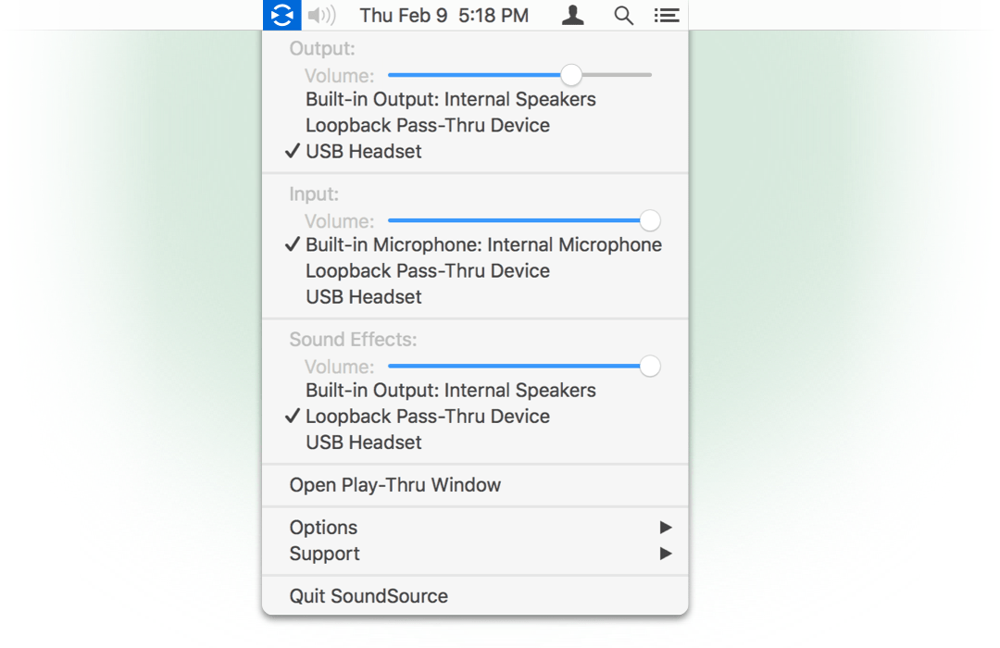

SoundSource's Global Menu
SoundSources's global menu will provide access to its settings from any application. You'll find the icon for the global SoundSource menu in the upper right of your screen:

SoundSource's Global Menu Bar Icon
No matter what application you're currently using, clicking this icon gives you access to SoundSource's functions.

SoundSource's Global Menu in Action
As you can see, the menu shows SoundSource's options, and allows you to open the Play-Thru window as well.
Menu Bar-Only Mode

SoundSource's Display Setting
If you like, SoundSource can run exclusively in your menu bar, with no icon in the Dock or application switcher. To adjust how SoundSource displays, open the Preferences window and change the “Show SoundSource” setting.